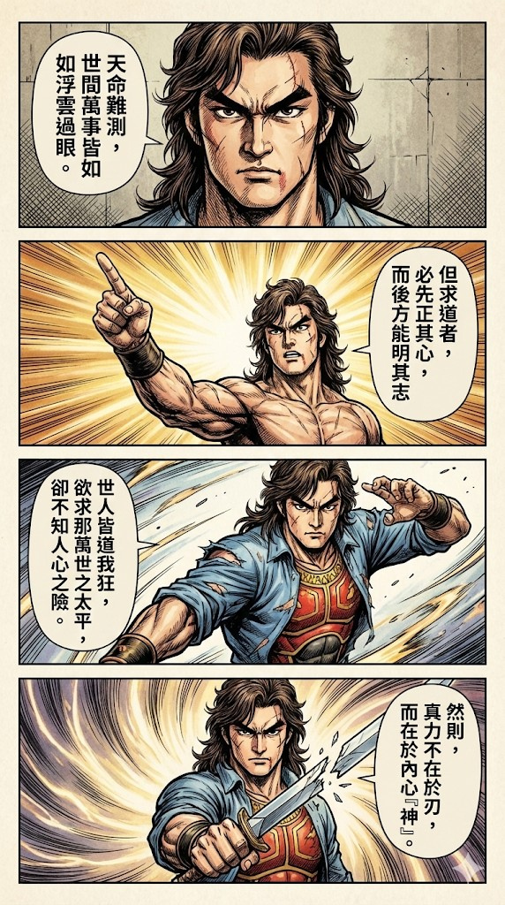
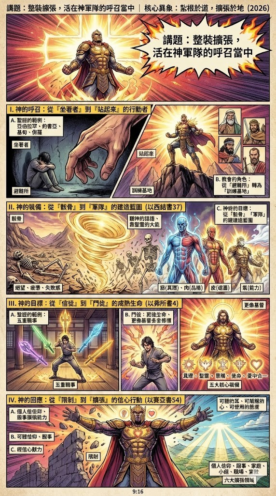
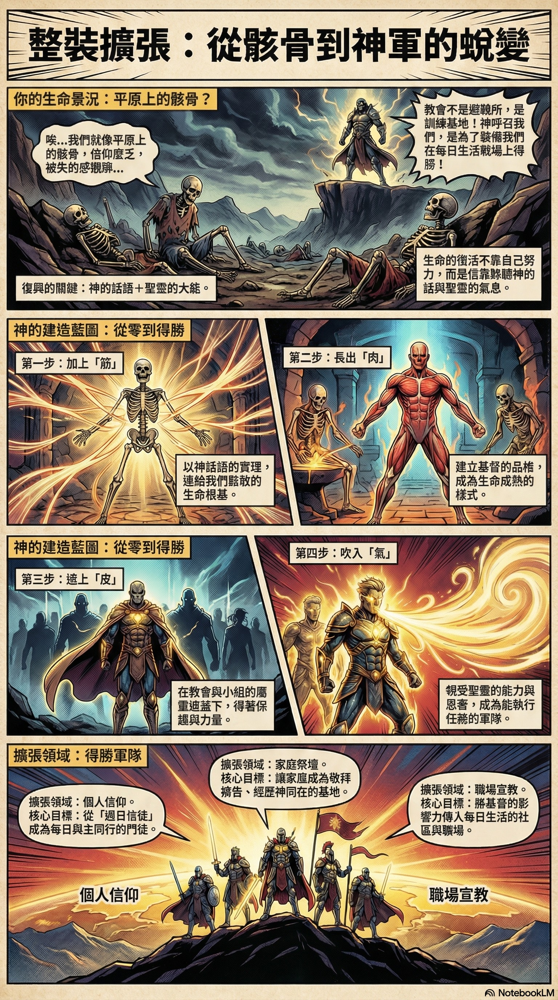

1.0 主題、背景與總結要訣
1.1 前言：設定新年度的屬靈座標
弟兄姊妹平安。在我們深入2026年的異象之前，我想先重申一個核心信念：教會是我們的家。而這個家，正預備好在新的一年，與你一同整裝待發，踏上全新的征程。我寫下這份文件，不只是要公布年度計畫，更是要邀請你我一同校準我們屬靈的羅盤，深度解析我們教會2026年的核心異象——「整裝擴張，活在神軍隊的呼召當中」。我們深信，2026年不只是一個日曆上的新年，它更是一個全新的「屬靈季節」的開始。在這個季節中，神正發出一個極具戰略重要性的呼召：祂要我們每一個人，從過去習慣於安坐聆聽的被動信徒，轉變為一個願意站立、接受裝備、並採取行動的主動戰士。這份文件，就是我們回應這個呼召的戰略手冊與行動指南。
1.2 核心論題與總結要訣

本篇講道的核心思想，可以用一句話概括： 2026年，神呼召我們個人與教會整體，都必須被祂的話語深深「裝備」，讓我們的生命境界被祂的大能「擴張」，最終，從一群僅僅滿足於安逸聚會的群體，蛻變為一支有紀律、有能力、被差派、且能得勝的「耶和華的軍隊」。 這一切，都濃縮在我們2026年的年度主題之中： 「紮根於道，擴張於地」 。為了幫助大家快速掌握並內化這個異象，以下提煉出三個關鍵的總結要訣：
- 信仰不是避難所，而是訓練基地： 神呼召我們進入教會，不是為了逃避現實的壓力與挑戰，而是要裝備我們，使我們有能力在每日的生活戰場上靠主得勝。
- 復興不是靠自己，而是靠聖靈： 生命的真正改變與屬靈的突破，其源頭並非來自我們個人的掙扎與努力，而是源於我們願意敞開自己，讓聖靈的大能氣息吹入，使枯骨復活。
- 擴張不是更忙碌，而是更有根基： 屬靈擴張的真實意義，不在於增加更多的教會活動或事工項目，而在於我們生命品格的成熟、信仰根基的加深，以及與神關係的深化。為了讓大家一目了然，我將整篇信息的骨幹濃縮成這張綱要卡片。請將它看作我們的作戰地圖，接下來，我們將逐一探索地圖上的每個重要據點。
2. 論點綱要卡片

這張地圖清晰地勾勒出了我們的屬靈征途。現在，讓我們深入每一個論點的細節、聖經依據與生活見證。
3.0 深度論述與生活見證

3.1 論點一：興起吧！神呼召我們成為行動者
我們的信仰，究竟是一種靜態的慰藉，還是一種動態的使命？神呼召我們「站起來」，這句話就為2026年定下了行動的基調。祂的計畫從來不是要一群安坐不動的觀眾，而是一支能夠行動的軍隊。縱觀聖經，神的呼召總是伴隨著清晰的行動指令：祂對亞伯拉罕說「你要離開」；對約書亞說「你當剛強壯膽...去得地為業」；對基甸說「你靠著你這能力去」；對保羅說「你起來站著」。這些都表明，真正的信仰必然會轉化為具體的行動。這也挑戰了我們對教會角色的認知。許多人將教會視為躲避現實壓力的「避難所」，雖然耶穌是我們隨時的幫助與避難所，但神對教會的心意遠不止於此。祂更要教會成為一個「訓練基地」，一個裝備我們生命、使我們成為「會打仗、能得勝的人」的地方。神不只要醫治和安慰我們，祂更要差派和使用我們。因此，採取行動，是我們回應神呼召、邁向整裝擴張的第一步。
3.2 論點二：從骸骨到軍隊 — 神的重建藍圖
對於那些在生活中感到無力、疲憊、深陷失敗感，或對未來感到迷茫的人而言，以西結書37章「骸骨復甦」的異象，是神所賜下最震撼、也最充滿盼望的重建藍圖。
- 骸骨的象徵： 平原上滿佈的枯乾骸骨，生動地代表了我們生命中的各種困境。它可能是信仰疲乏、失去熱情的年輕人；可能是為教養兒女心力交瘁的父母；也可能是任何一個被過去的失敗捆綁、覺得自己一無是處的人。外在的「枯乾」並不是最根本的問題， 不願意聽神的話，才是問題的核心 。
- 復興的關鍵： 復興的轉捩點，不在於骸骨自身的條件，而在於兩個關鍵要素。第一，是 願意聽神的話 。當先知遵命向骸骨發預言時，改變才開始發生。第二，是 倚靠聖靈的大能 。神說：「我必使氣息進入你們裡面，你們就要活了。」這清楚地表明，生命的復活不是靠自我努力，而是靠聖靈的氣息吹入。我們的家庭、信心與異象，都需要靠聖靈才能重新活過來。
- 建造的四要素： 神重建生命，有其清晰的步驟與藍圖：
- 加上筋 (Tendons)： 這代表 神話語的真理 。真理是我們信仰的骨架與根基，將我們鬆散的生命連結起來。
- 長出肉 (Flesh)： 這代表 生命的成熟與基督的品格 。神要我們長出屬神的品格，同時要警惕「長錯肉」——那被「眼目的情慾、肉體的情慾和今生的驕傲」所餵養的生命。
- 遮上皮 (Skin)： 這代表 屬靈的保護與遮蓋 。如同母雞保護小雞，我們需要在教會與小組的遮蓋下成長，這份遮蓋能保護我們免受外界的攻擊。
- 吹入氣息 (Breath)： 這代表 聖靈的能力與恩膏 。這是使我們從一個被造的人，成為一支有能力執行任務的軍隊的最終關鍵。
- 生活見證的融合： 神重建我們，往往是從打碎我們自己的計畫開始。牧師在講道中分享了他家庭的經歷，這正是最好的印證。他提到，原本家庭計畫兩年後要外派，但因著需要照顧年邁的父母，計畫被迫改變。同時，兒子從英國回到台灣後，極度不適應學習環境，但在禱告與信靠中，神一步步帶領，讓他順利適應。這些經歷都說明了「人的計畫常趕不上變化」，但當我們願意放下自己的計畫、順服神的帶領時，我們就正在經歷神親手的重建與塑造，最終必看見祂奇妙的作為。當我們經歷了從骸骨到軍隊的重建之後，神的心意是要我們繼續成長，成為祂成熟的門徒。
3.3 論點三：成全聖徒 — 追求更像基督的成熟生命
「裝備」的最終目的，不僅是為了讓我們獲得屬靈的能力，更是為了引導我們走向生命的成熟與教會的合一。以弗所書第四章為此提供了清晰的指導藍圖。
- 五重職事的真義： 經文提到的「使徒、先知、傳福音的、牧師和教師」，並非指五種教會內的特定「職業」或階級，而是神賜給教會、用以建造信徒的五種核心「能力」。例如，使徒性的能力帶來開拓與方向，如同劉彤牧師在海外開拓了超過一百間教會，這就是一種將神國度擴張出去的能力；先知性的能力帶來啟示與洞見；牧養性的能力則帶來關懷與醫治。
- 「成全聖徒」的目標： 這些恩賜與能力存在的目的，是為了「成全聖徒」，原文有 修補、裝備、使人勝任 的意思。目標是裝備每一個信徒，使他們都能各盡其職，共同建立基督的身體。這裡的重點不是培養少數的屬靈精英，而是讓每一位信徒的生命都得以長大成人，滿有基督長成的身量。因此，我們追求的目標應當是「更像基督」的成熟門徒，而不是成為一個「更忙碌」的宗教人士。
- 五大核心裝備方向： 根據此目標，教會在2026年將聚焦於以下五個具體的裝備方向：
- 在真理上被建立： 將神的話語吃到生命裡，而不只是聽聽而已。
- 在聖靈中被充滿： 經歷聖靈的大能，活出有能力的生命。
- 在恩賜上被訓練： 發掘並使用神所賜的恩賜來服事人。
- 在使命中被差派： 從旁觀者成為委身者，被差遣去傳福音。
- 在愛中合一被建造： 學習與人同工，共同建造神的家。當我們的生命被神如此裝備並趨向成熟後，我們的生命境界也將自然而然地迎來突破與擴張。
3.4 論點四：擴張境界 — 憑信心回應神的應許
在屬靈的語境中，「擴張」並非盲目地追求規模上的變大，而是一次信心的跨越，是我們屬靈疆界的拓展。以賽亞書54章的應許，揭示了擴張的屬靈原則。
- 信心的原則： 經文呼召「不懷孕不生養的要歌唱」，並指示百姓「要擴張你帳幕之地...不要限制」。這揭示了一個重要的屬靈原則： 我們的讚美與信心的預備，應當走在神蹟成就的前面。 我們不是看見了才相信，而是因著相信神的應許，就預先為祝福的到來預備空間。
- 限制的來源： 神的應許是豐盛而無限的，真正的限制往往不在於神，而在於我們自己。我們是否像那隻「井底之蛙」，以為眼前的這片天就是全世界？神正呼召我們跳出枯井，看見祂國度的遼闊。
- 六大擴張領域： 2026年的擴張是全面性的，涵蓋了我們生活的每一個層面。我們需要禱告，讓神在以下六個領域中擴張我們：
- 信仰跟隨的擴張： 從一週一次的「週日信徒」，成為每日與主同行的跟隨者。
- 恩賜服事的擴張： 從習慣性的「我不會」，轉變為信心的回應「主，我願意」。
- 家庭祭壇的擴張： 讓家庭不再是爭吵的陣地，而是敬拜禱告、經歷神同在的國度基地。
- 小組門訓的擴張： 讓小組成為生命真實委身、彼此建造與更新的地方。
- 社區職場的擴張： 將基督的馨香與影響力，帶入我們每天生活的社區與職場。
- 宣教外展的擴張： 不再只領受祝福，而是成為祝福流通的管道。既然神已經為我們揭示了如此清晰的呼召、裝備與擴張藍圖，那麼，我們應當如何以具體的行動來回應祂呢？
5.0 講道精華逐點解析
| 核心概念 |
|---|
| 教會的家,教會會籍是一個象徵性的委身，代表願意與弟兄姊妹一同奔走前面的道路，將教會當成自己的家。 |
| 新年新季節,神對新年的定義，超越了個人變瘦、變美、變有錢的期望。神更在乎祂的百姓是否在屬靈上「站起來」，被裝備，並進入祂的計畫。 |
| 神的計畫 vs. 人的計畫,我們的生命常有自己的規劃（如計畫幾年後外派），但神的帶領時常超越我們的預期（如因照顧家人而留下）。順服神的帶領，祂會為我們開路。 |
| 信仰的行動性,聖經中的信仰從來不是被動的。從亞伯拉罕到保羅，神的呼召總是要求「起來」、「離開」、「站著」，這意味著信仰必須帶出實際行動。 |
| 骸骨復甦的異象,枯乾的骸骨象徵生命中各種絕望的景況。問題的關鍵不是外在的枯乾，而是內心不願聽神的話。當神的話語和聖靈進入，枯死的生命就能復活。 |
| 從信徒到軍隊,神的心意不是要我們成為很會聚會的「會友」，而是要將我們建造成「極大的軍隊」。教會不是俱樂部，而是訓練生命、翻轉家庭的基地。 |
| 五重職事的功用,「使徒、先知、傳福音、牧師、教師」是建造教會的五種能力，其目的是「成全聖徒」，裝備每個信徒去服事，最終目標是生命長大成熟，更像基督。 |
| 擴張的六大領域,2026年的擴張是全面性的，包含個人信仰、服事能力、家庭祭壇、小組門訓、職場影響力以及對外的宣教，要求信徒在各個層面突破限制。 |
| 回應神的態度,回應神的呼召需要三種態度：一顆願意聆聽神聲音的耳朵、一顆即使不完美也願意行動的順服之心，以及一個願意被神塑造和使用的柔軟態度。 |
| 2026年的宣告,2026年不是普通的一年，而是恢復、成就與擴張的一年。我們不是枯骨，而是神要使其復活的軍隊，要在各個領域經歷得勝與翻轉。 |
6. 結束的代禱
親愛的天父，我們來到祢的面前，感謝祢在這新的一年，賜給我們如此清晰的異象與呼召。我們不再滿足於現狀，我們渴望興起，成為祢榮耀的軍隊。主啊，我們禱告，求祢的聖靈大大地澆灌、充滿我們每一個人。求祢賜下屬天的眼光與能力，吹散我們生命中的一切枯乾與絕望，使我們能從枯骨的狀態中真正活過來，成為大有能力的見證。我們為每一個個人、每一個家庭來禱告。無論是在財務、關係、健康或工作上所面臨的挑戰，我們都交在祢的手中。我們宣告，2026年是翻轉與得勝的一年，祢要在我們生命的每一個領域中施行奇事。主，我們同心宣告，祢的教會將不再沉睡！我們要在新的一年裡興起、整裝、擴張，勇敢地向著祢所應許的豐盛之地前進。我們宣告，平原上的骸骨正在興起，成為祢勢不可擋的軍隊。奉我主耶穌基督得勝的名禱告。阿們。